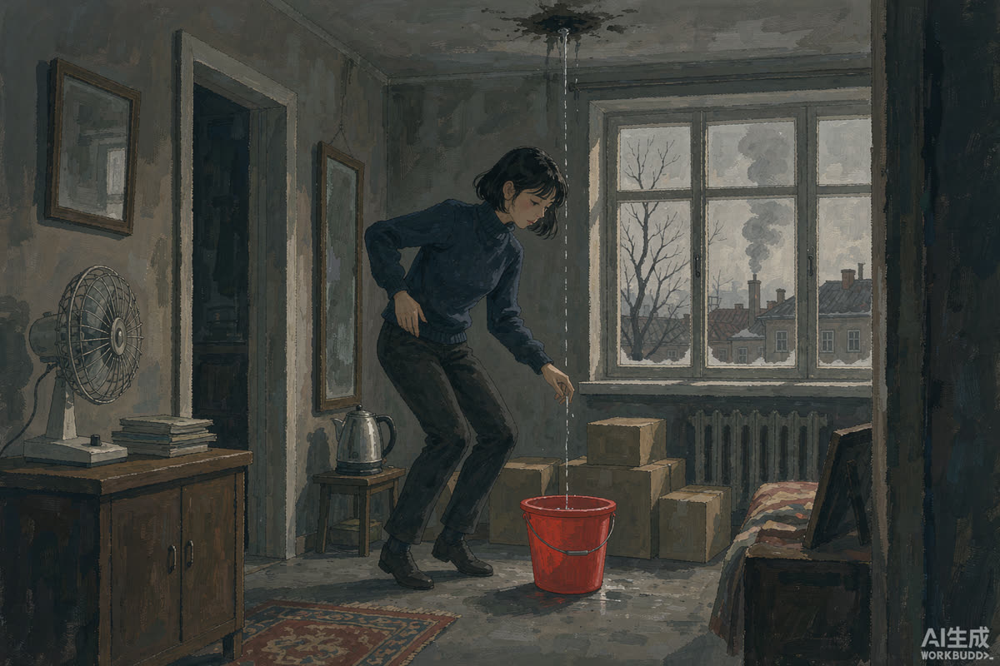

3.8 万买鹤岗房遇漏水：低房价的账，从来不只是房价
江苏一位姑娘花 3.8 万元网购鹤岗住房，入住后遭遇房顶漏水。3.8 万的房价再次冲上热搜，但这次的故事讲的是另一半账本：省下的房款，会以什么方式收回去。
梳理事件不难发现这条线：异地、线上看房、低价成交、异地收房——每个环节都省了钱，也省掉了保障。房顶漏水只是被现实开出的第一张账单，而不是故事的全部。
把镜头拉远：鹤岗现象六年了，早期买家有的留了下来，有的已经转手离场。留下的人里，_remote 工作与低成本结构的匹配者居多；离开的人里，低估隐性成本的居多。漏水只是其中最直观的一种。

▲ 图注：红色水桶接住的不只是水（号外风 · 示意）
自担派 ▸ 成年人低价购房自担风险，3.8 万的试错成本已属可控，没必要替当事人喊冤。
中介责任派 ▸ "网购"住房链条里信息严重不对称——房况、供暖、物业、产权细节，卖方与平台是否尽了告知义务，才是该追问的。
两边的分歧点其实是一个问题：低价房交易该不该有与普通二手房同等的信息披露标准。价格再低，交易的本质没变。
房子可以便宜到极致，但生活的隐性成本不会打折——房顶、暖气、通勤、机会、医疗，每一项都在暗中重新定价。鹤岗留给耐心者的红利，从来轮不到冲动者。
后续盯什么 WATCHLIST
01 · 当事人与卖方的后续交涉：漏水维修的责任认定结果
02 · 异地网购房的纠纷量是否继续上升——平台规则会不会被倒逼升级
03 · 鹤岗现象进入第六年：人口留存数据与本地配套的改善速度
如果给你一套 3.8 万的房子，你敢接吗？评论区亮观点。
口径说明：事件细节以当事人公开表述为准；观点仅代表编辑部；本栏目不站队、只拆事。